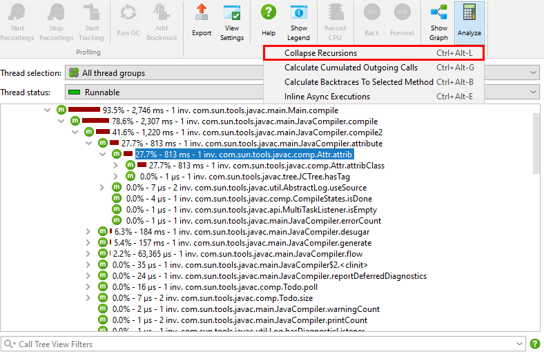
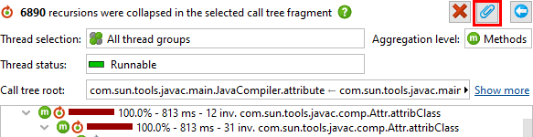
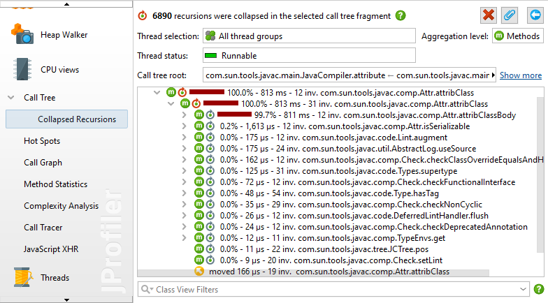
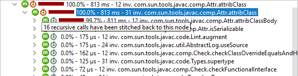
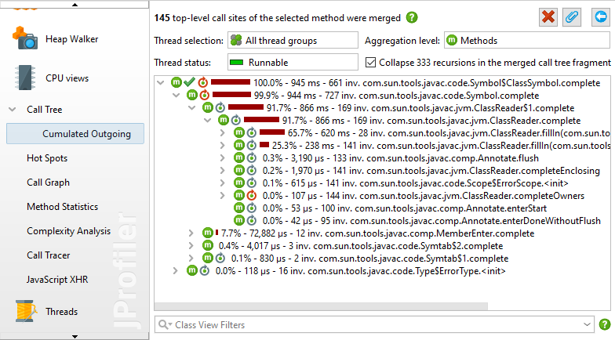
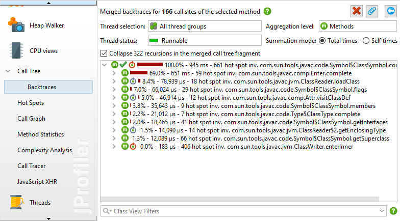
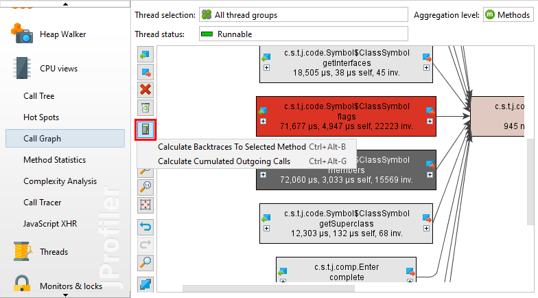
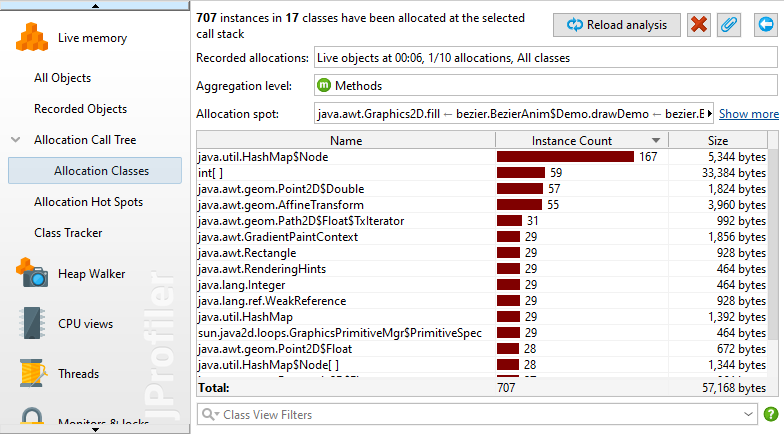

The call tree shows the actual call stacks that JProfiler has recorded. When analyzing the call tree, there are a couple of transformations that can be applied to the call tree to make it easier to interpret. These transformations can be time-consuming and change the output format in a way that is incompatible with the functionality in the call tree view, so new views with the results of the analyses are created.
To perform such an analysis, select a node in the call tree view and choose one of the call tree analysis actions from the tool bar or the context menu.

A nested view will be created below the call tree view. If you invoke the same analysis action again, the analysis will be replaced. To keep multiple analysis results at the same time, you can pin the result view. In that case, the next analysis of the same type will create a new view.

In live sessions, the result views are not updated together with the call tree and show data from the time when the analysis was made. To re-calculate the analysis for the current data, use the reload action. If the call tree itself has to be re-calculated, like in the allocation tree with disabled auto-updates, the reload action takes care of that as well.
A programming style that makes use of recursions leads to call trees that are difficult to analyze. The "Collapse recursions" call tree analysis calculates a call tree where all recursions are folded. The parent node of the current selection in the call tree serves as the call tree root for the analysis. To analyze the entire call tree, select one of the top-level nodes.

A recursion is detected when the same method was already called higher up in the call stack. In that case, the sub-tree is removed from the call tree and stitched back to the first invocation of that method. That node in the call tree is then prefixed with an icon whose tool tip shows the number of recursions. Below that node, stacks from different depths are merged. The number of merged stacks is shown in the tool tip as well. The total number of collapsed recursions is shown in the header, above the information about call tree parameters that were set for the original call tree.

For a simple recursion, the number of merged stacks is the number of recursions plus one. So a node whose recursion tool tip shows "1 recursion" would contain a tree with nodes that show "2 merged stacks" in their recursion tool tip. In more complex cases, recursions are nested and produce overlapping merged call trees, so that the number of merged stacks varies from stack depth to stack depth.
At the point where a sub-tree is removed from the call tree to be merged higher up, a special "moved nodes" placeholder is inserted.
In the call tree, you can see the outgoing calls for a selected method, but only for one particular call stack where that method has been invoked. The same method of interest may have been invoked in different call stacks and it's often useful to analyze a cumulated call tree of all those invocations in order to get better statistics. The "Calculate cumulated outgoing calls" analysis shows a call tree that sums all outgoing calls of a selected method, regardless of how the method was invoked.

For the selected method, JProfiler collects all its top-level invocations without considering recursive calls and cumulates them in the result tree. The header shows how many such top-level call sites were summed in that process.
At the top of the view, there is a check box that allows you to collapse recursions in the result tree, similar to the "Collapse recursions" analysis. If recursions are collapsed, the top level node and the first level of outgoing calls show the same numbers as the method call graph.
The "Calculate backtraces" analysis complements the "Calculate cumulated outgoing calls" analysis. Like the latter, it sums all top-level calls of the selected method without considering recursive calls. However, instead of showing outgoing calls, it shows the back traces that contribute to the invocations of the selected method. The call originates at the deepest node and progresses toward the selected method at the top.

This analysis is similar to the hot spots view, only that by default it sums total times instead of self times for the selected method, and the hot spots view only shows methods whose self time is a significant fraction of the total time. At the top of the view there is a radio button group labeled Summation mode that can be set to Self times. With that selection, the summed values for the selected method match that of the default mode in the hot spots view.
In the back traces, the invocation counts and times on the back trace nodes are only related to the selected method. They show how much the invocations along that particular call stack have contributed to the values of the selected method. Similar to the "Calculate cumulated outgoing calls" analysis, you can collapse recursions and the first level in the backtraces is equivalent to the incoming calls in the method call graph.
In the call graph, each method is unique while in the call tree methods can occur in multiple call stacks. For one selected method, the "Calculate cumulated outgoing calls" and the "Calculate backtraces" analyses are a bridge between the viewpoints of the call tree and the call graph. They put the selected method in the center and show the outgoing and incoming calls as trees. With the Show Call Graph action, you can switch to the full graph at any time.
Sometimes, you want to switch the perspective in the opposite direction and change from graph to a tree view. When you are working in the call graph, you can show the cumulated outgoing calls and the backtraces as trees for any selected node in the graph with the same call tree analyses as in the call graph.

In the IntelliJ IDEA integration, the call graph that is shown in the gutter of the editors contains actions to show these trees directly.
A little bit different from the previous call tree analyses is the "Show classes" analysis in the allocation call tree and the allocation hot spots views. It does not transform the call tree to another tree, but shows a table with all allocated classes. The result view is similar to the recorded objects view, but restricted for a particular allocation spot.

In the analysis result views that show call trees, both the "Calculate cumulated outgoing calls" and the "Calculate backtraces to selected method" analyses are available. Invoking them creates new top-level analyses with independent parameters. Any call tree removals from the previous analysis result view are not reflected in the new top-level analysis.
The Show Classes action, on the other hand, does not create a new top-level analysis when used from a call tree analysis result view. Instead, it creates a nested analysis that is two levels below the original view.